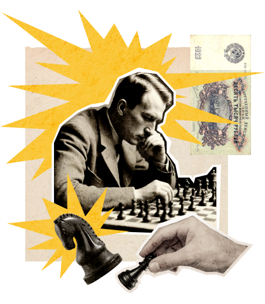
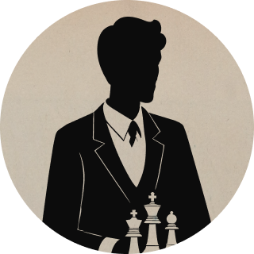

Дело помощи утопающим — дело рук самих утопающих! Шахматы двигают вперед не только культуру, но и экономику! Лед тронулся, господа присяжные заседатели!
Чтобы поддержать Международный васюкинский турнир посетите лекцию на тему: «Плодотворная дебютная идея»
Чтобы поддержать Международный васюкинский турнир

посетите лекцию на тему: «Плодотворная дебютная идея»

и Сеанс одновременной игры в шахматы на 160 досках гроссмейстера О. Бендера
| Место проведения: | Клуб «Картонажник» |
|---|---|
| Дата и время мероприятия: | 22 июня 1927 г. в 18:00 |
| Стоимость входных билетов: | 20 коп. |
| Плата за игру: | 50 коп. |
| Взнос на телеграммы: | 100 руб.21 руб. 16 коп. |
По всем вопросам обращаться в администрацию к К. Михельсону
Этапы преображения Васюков
- 1 Строительство железнодорожной магистрали Москва-Васюки
- 2 Открытие фешенебельной гостиницы «Проходная пешка» и других небоскрёбов
- 3 Поднятие сельского хозяйства в радиусе на тысячу километров: производство овощей, фруктов, икры, шоколадных конфет
- 4 Строительство дворца для турнира
- 5 Размещение гаражей для гостевого автотранспорта
- 6 Постройка сверхмощной радиостанции для передачи всему миру сенсационных результатов
- 7 Создание аэропорта «Большие Васюки» с регулярным отправлением почтовых самолётов и дирижаблей во все концы света, включая Лос-Анжелос и Мельбурн
Участники турнира
/ 6
-  Хозе-Рауль Капабланка Чемпион мира по шахматам Подробнее
- Эммануил Ласкер Чемпион мира по шахматам Подробнее
- Александр Алехин Чемпион мира по шахматам Подробнее
- Арон Нимцович Чемпион мира по шахматам Подробнее
- Рихард Рети Чемпион мира по шахматам Подробнее
- Остап Бендер Гроссмейстер Подробнее
/ 6
Дело помощи утопающим — дело рук самих утопающих! Шахматы двигают вперед не только культуру, но и экономику! Лед тронулся, господа присяжные заседатели!